Alguns dos melhores jogadores da história
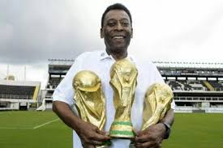
Pelé

Lionel Messi
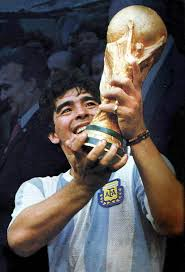
Diego Maradona
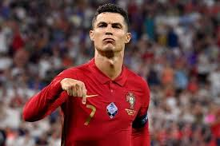
Cristiano Ronaldo

Johan Cruyff
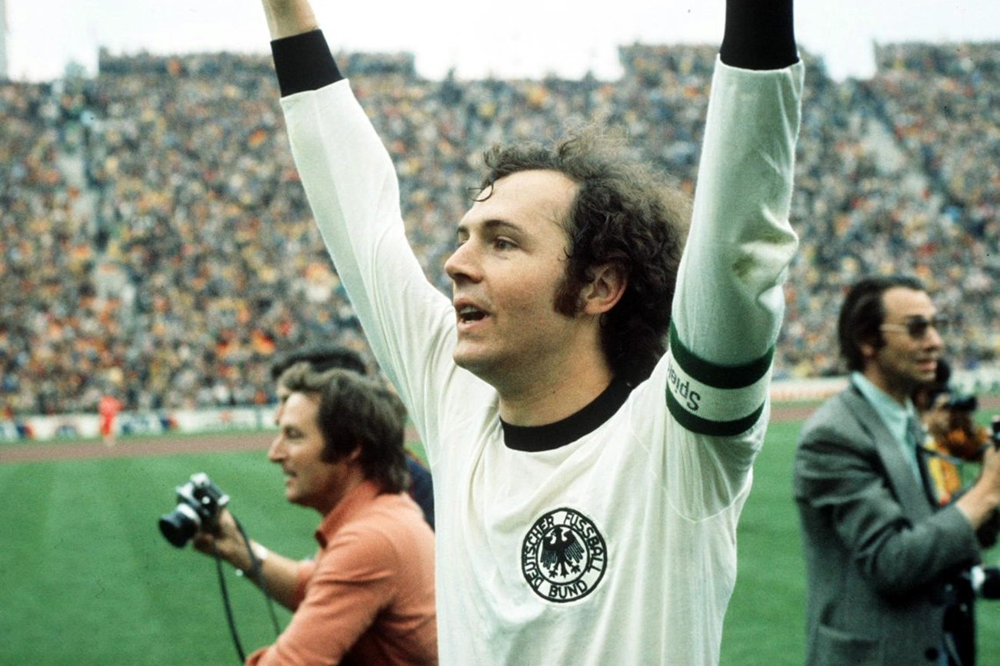
Beckenbauer
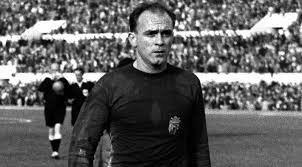
Di Stéfano

Ronaldo (Fenômeno)

Ronaldinho Gaúcho
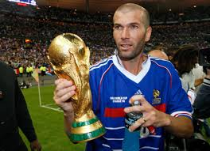
Zinedine Zidane
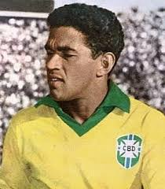
Garrincha

Kylian Mbappé
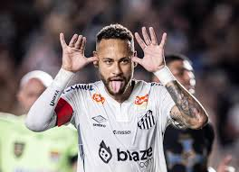
Neymar Jr
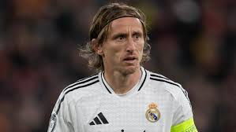
Luka Modric
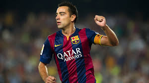
Xavi Hernández
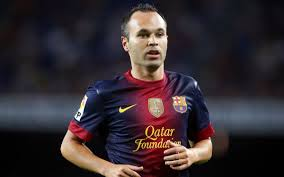
Andrés Iniesta
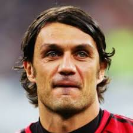
Paolo Maldini
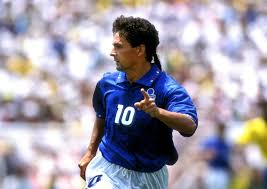
Roberto Baggio
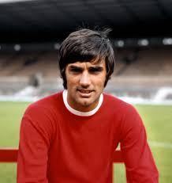
George Best
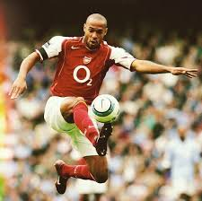
Thierry Henry
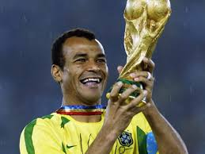
Cafu

Lev Yashin
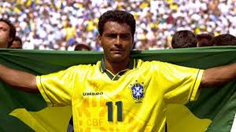
Romário
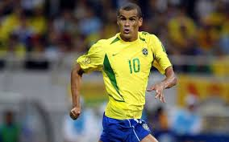
Rivaldo

Zico
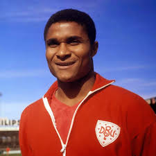
Eusébio

Ferenc Puskás

Gerd Müller

Bobby Charlton

Kenny Dalglish

Marco van Basten

Ruud Gullit

Frank Rijkaard

Lothar Matthäus

Dennis Bergkamp

Eric Cantona

Gianluigi Buffon

Iker Casillas

Sergio Ramos

Philipp Lahm

Andrea Pirlo

Steven Gerrard

Frank Lampard

Didier Drogba

Samuel Eto'o

Wayne Rooney

Sergio Agüero

Kevin De Bruyne

Virgil van Dijk